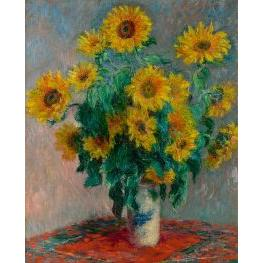

Bouquet of Sunflowers
Created: 1881
Study of a Vibrant Arrangement, known as Bouquet of Sunflowers – Created by Vincent van Gogh
*Bouquet of Sunflowers* is a vibrant still‑life painting by Pierre‑Auguste Renoir. The artwork features a lively arrangement of sunflowers in a vase, painted with Renoir’s signature warm palette and expressive brushwork. The rich yellows and soft lighting create a sense of warmth and natural beauty, showcasing the artist’s ability to capture both color and atmosphere with elegance.
A bright, energetic still life, Bouquet of Sunflowers shows van Gogh’s love for bold color and thick, expressive brushwork. Painted in 1881, it captures the warmth and simplicity of freshly gathered blooms, arranged with a sense of spontaneity rather than perfection. The lively yellows and textured strokes give the flowers a feeling of movement and life.
Type: Impressionist Still‑Life Painting